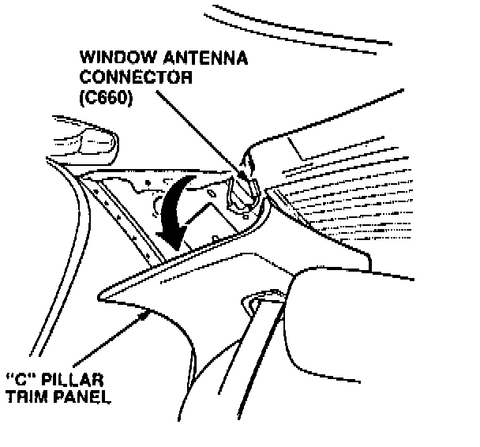
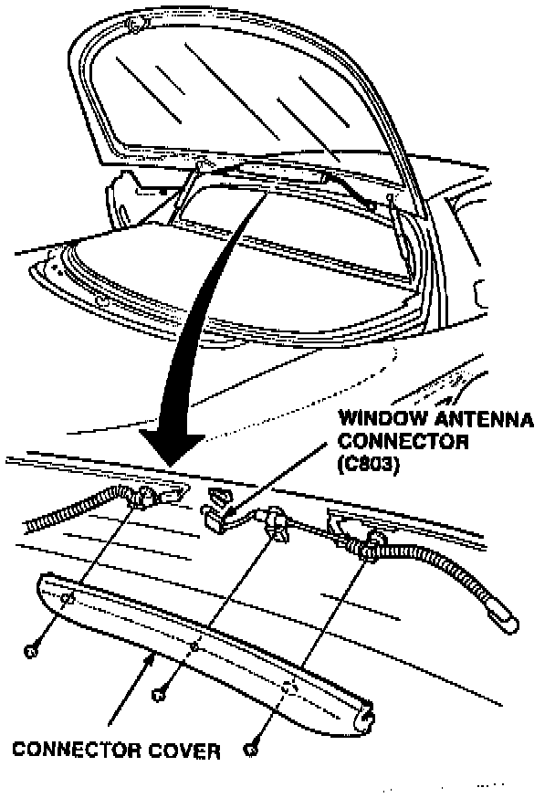
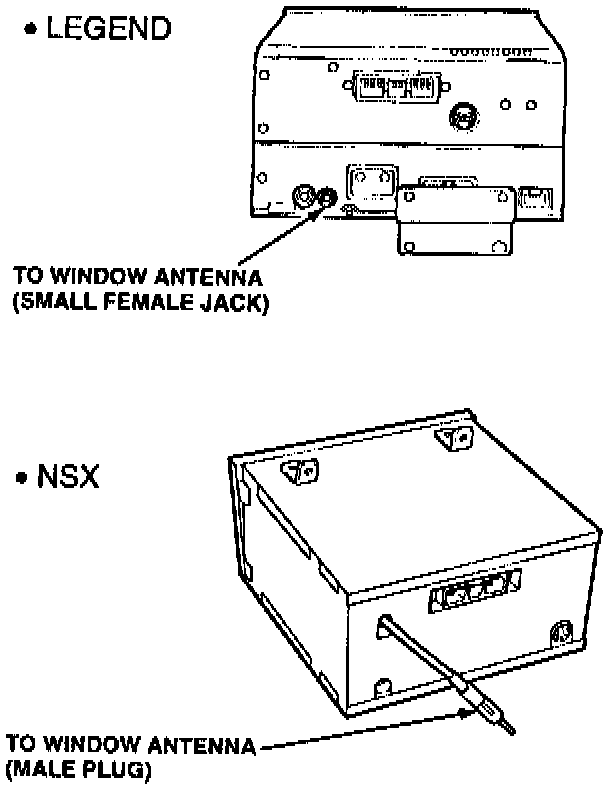
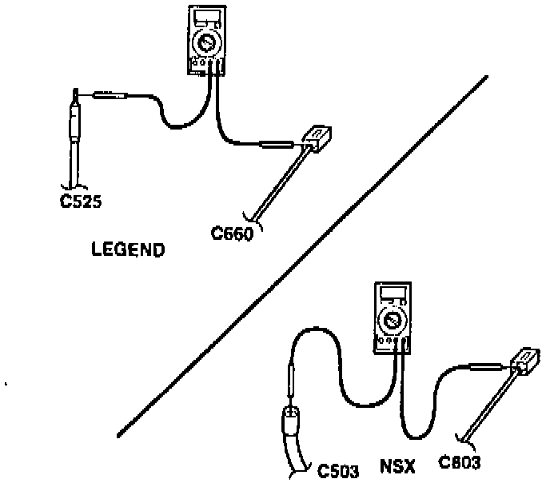
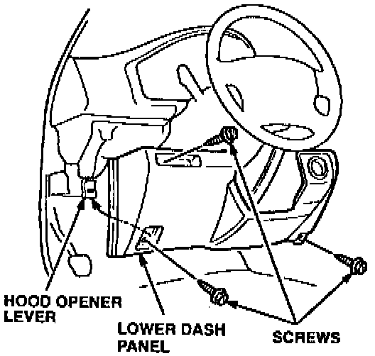
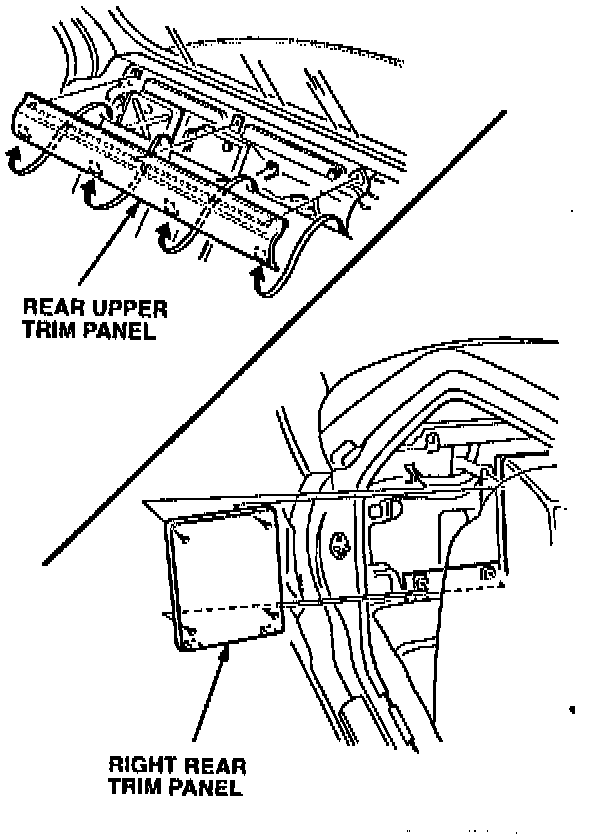
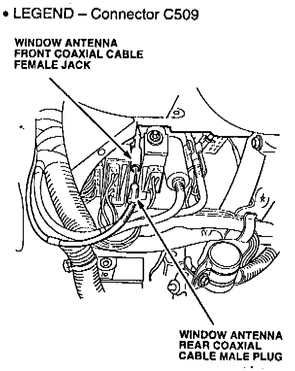
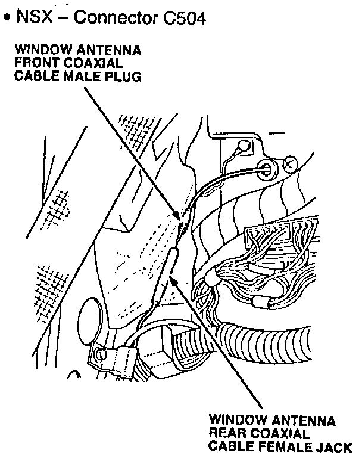

Window Antenna Coaxial Cable Test
1. Disconnect the window antenna connector at the rear window:
^ LEGEND - Remove the right rear "C" pillar trim panel; then disconnect the window antenna connector.

^ NSX - Open the rear hatch, and remove the connector cover; then disconnect the window antenna connector.

2. Disconnect the window antenna coaxial cable from the radio.

3. Measure the resistance of the coaxial cable between the center of the window antenna plug/jack and the window antenna connector (Legend: C525 to C660, NSX: C503 to C803).
^ If the resistance is less than 10 ohms, go to Window Antenna Coaxial Cable Ground Test.
^ If the resistance is more than 10 ohms, continue with step 4.
4. Remove the following items to access the coaxial cable connector. SRS components are located in this area. Review the SRS component locations, precautions, and procedures in the SRS section of the appropriate service manual before continuing.

^ LEGEND - Remove the lower dash panel; then locate the window antenna coaxial cable on the left side of the steering column.

^ NSX - Move the passenger's seat forward, and remove the rear upper trim panel; then remove the right rear trim panel. Locate the window antenna coaxial cable.


5. Disconnect the window antenna coaxial cable connector.
6. Measure the resistance between the center of the window antenna front coaxial cable plug/jack, at the back of the radio, and the center of the window antenna front coaxial cable plug/jack at the connector (Legend: C509 to C525, NSX: C504 to C503).
^ If the resistance is more than 10 ohms, replace the window antenna front coaxial cable. Refer to PARTS INFORMATION.
^ If the resistance is less than 10 ohms, replace the window antenna rear coaxial cable. Refer to PARTS INFORMATION.